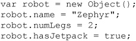
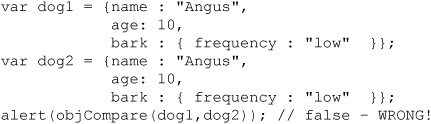
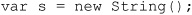
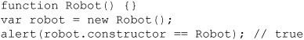
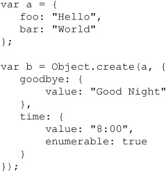

In slight contrast to many languages that are referred to as “object-oriented” (a concept we’ll explore briefly later in this chapter), JavaScript is actually an “object-based” language. In JavaScript, practically everything is an object, except for language constructs, keywords, and operators. Objects in JavaScript play many different roles, from representing data types to manipulation of HTML documents via the Document Object Model (DOM), to interfacing with the browser, and more. Object-based programming in JavaScript is what unlocks the true power of the language. While previous chapters presented examples that implicitly demonstrated the use of native (built-in) objects, this chapter explores JavaScript objects directly and in-depth.
Objects in JavaScript fall into four groups:
• User-defined objects are custom objects created by the programmer to bring structure and consistency to a particular programming task. Objects can be nested within other objects, and this allows the programmer to create arbitrarily complex data structures consisting of data (properties) and behavior (methods) for desired tasks. The programmer can collect all the data and functions related to a specific task into a single unit: an object. The importance of this pattern will be demonstrated throughout this chapter.
• Native objects are provided by the JavaScript language itself. These include objects associated with data types such as String, Number, and Boolean, as well as objects that allow creation of user-defined objects and composite types, such as Object and Array. Native objects also include JavaScript functions, such as Function, as well as other objects that simplify common tasks, such as Date, Math, and RegExp manipulation. Other miscellaneous objects for exception handling, such as Error, are also native. The capabilities of native objects are governed by the ECMAScript language standard and, to a lesser extent, by the specifications of particular browser vendors. The following two chapters discuss the features of native objects.
• Host objects are those objects that are not specified as part of the JavaScript language but that are supported by most host environments, typically browsers. Examples of browser-based host objects include window, the object that enables the manipulation of browser windows and interaction with the user, and navigator, the object that provides information about client configuration. Most aspects of host objects were not initially governed by any standard, though today the HTML5 specification does attempt to address this oversight. Because of the lack of clear ownership, the properties and behavior of host objects can vary significantly from browser to browser and from version to version. These types of objects will be discussed throughout the rest of the book and in Chapter 9 particularly.
NOTE As JavaScript can be hosted in other environments besides browsers—for example, server-side JavaScript—host objects vary quite a bit depending on context of use. We do not discuss server host objects given the lack of any consensus on what will actually be supported consistently across server-side implementations.
• Document objects are part of the Document Object Model (DOM), as defined by the W3C. These objects present the programmer with a structured interface to HTML and XML documents. Access to the document objects is provided by the browser via the document property of the window object (window.document). An in-depth discussion of the DOM can be found in Chapter 10.
The objects in JavaScript are summarized in Table 6-1.
Table 6-1 Overview of JavaScript Object Classifications
At times, particularly in the past, some overlap has existed in these four categories, mainly because there is no one standard governing the intersection of browser and document. The ECMAScript standard governs the language itself. The W3C’s DOM specification dictates how structured documents such as Web pages should be presented to a scripting environment. Browser vendors define access to the user interface as they see fit and even create their own proprietary extensions to the DOM. The result is a chaotic and somewhat confusing set of technologies that come together under the umbrella of what we think of when we say “JavaScript.”
The primary complications in JavaScript have to do with differences among various browser implementations of certain “host environment” details, such as the DOM and event handling. For this reason, JavaScript libraries or frameworks, including jQuery, Dojo, YUI, and Prototype, have become popular, as well as dozens of others. These frameworks attempt to smooth over the differences between different browser implementations of object models and event handling.
This chapter covers the fundamental ways that objects behave and can be manipulated in JavaScript. First it will illustrate how objects in JavaScript work by examining native objects; then it will extend these techniques to user-defined objects. The specific capabilities of native, host, and document objects will be discussed in further detail in chapters that follow.
An object is an unordered collection of data, including primitive types, functions, and even other objects. The utility of objects is that they gather all the data and behavior necessary for a particular task in one place. For example, a String object stores textual data and also provides many of the functions you need to operate on the data. While objects aren’t strictly necessary in a programming language (for example, C has no objects), when properly employed they can bring a sense of order and maintainability to code—and this is quite useful, particularly when dealing with large and complex programs.
An object is created with a constructor, a special type of function that prepares a new object for use by initializing the memory it takes up. In Chapter 4, we saw how objects are created by applying the new operator to their constructors. This operator causes the constructor to which it is applied to create a brand-new object, and the nature of the object that is created is determined by the particular constructor that is invoked. For example, the String() constructor creates String objects while the Array() constructor creates Array objects. This is actually the way object types are named in JavaScript: after the constructor that creates them.
A simple example of object creation is shown here:
This statement creates a new String object and places a reference to it in the variable city. Because no argument was given to the constructor, city is assigned the default value for strings, the empty string. We could have made the example more interesting by passing the constructor an argument specifying an initial value:
This places a reference to a new String object with the value “San Diego” in city.
We are not limited to declaring only native objects such as String and Array; Chapter 4 also alluded to the creation of Object objects. These generic objects can be used to create user-defined data types, and they are, therefore, one of the most powerful tools available for writing nontrivial JavaScript code.
As with any object in JavaScript, you can add properties to a user-defined object dynamically:

You can, of course, also add functions dynamically. The following code extends the previous simple example by adding a method to the robot object. We first define the function and then add it to the object:
Note that the attack property is set to the name of the function with no parentheses. If the parentheses were added, the function would execute and attack would be set to the results of the function.
Notice that we named the method attack, even though the function was named strikeIntruder. We could have named it anything; the interpreter does not care what identifier we choose to use. Let’s invoke the method:
We could have written this example without even naming the function we called strikeIntruder().
A functional literal syntax is more compact and avoids cluttering the global namespace with a function that will be used only as a method of a user-defined object.
Because JavaScript supports literal syntax for many data types (for example, numbers, strings, arrays, and functions), it should come as no surprise that Object literals are also supported in JavaScript. The syntax is a curly braces–enclosed, comma-separated list of property/value pairs. Property/value pairs are specified by giving a property name, followed by a colon, and then its value. Here, we restate the previous example using both object and function literals:
And we can invoke robot.attack() with the same result as before.
The {…} object literal syntax is functionally equivalent to calling new Object(), with the added benefit that you can specify the properties directly in the object literal syntax, while you have to declare separate assignment statements subsequent to a new Object() statement. However, it is generally regarded as faster, and thus preferable, to use the {…} object literal syntax, even if declaring an initially empty object.
This example also hints at the robustness of these capabilities. It is perfectly valid to specify nested literals, properties with null or undefined values, and values that are not literals (that is, values that are variables). The following code illustrates these concepts in an example similar to those we’ve previously seen:
There is a fair amount going on here that might require explanation. First, notice that robot object’s property hasJetpack is set through another variable, jetpack. Also note that the robot.name is initially set to null, but it is later filled in with the appropriate value. The major change is that robot contains a nested object called sidekick, which also contains three properties— name, model, hasJetpack—and an attack() method. Invoking robot.attack() results in the now-familiar “ZAP!” output. Here’s the method call:
If the way the robot object has been defined in the previous examples seems bulky and inelegant to you, your programming instincts are very good. There is a better way to create your own objects that makes much better use of the object-oriented nature of JavaScript. We’ll explore that a little later in the chapter, but for now these examples should illustrate the options you have with regard to direct object declaration.
Objects and other variables use memory in the browser, so when you create objects in JavaScript, the interpreter automatically allocates memory for you to use. It also “cleans up” after you. This language feature is called garbage collection. Unlike some languages, which require strict memory management, JavaScript is more forgiving and will attempt to manage the memory as best it can. In most cases, it’s best to let JavaScript take care of these tasks.
Garbage-collecting languages such as JavaScript keep a watchful eye on your data. When a piece of data is no longer accessible to your program, the space it occupies is reclaimed by the interpreter and returned to the pool of available memory. For example, in the following code, the initially allocated String that references “Roy” will eventually be returned to the free pool because it is no longer accessible (that is, the reference to it was replaced by a reference to the object containing the sentence about Deckard):
If your code involves large amounts of data, giving the interpreter hints that you are done with specific variables can be useful in keeping the memory footprint of your script to a reasonable level. An easy way to do this is to replace unneeded data with null, indicating that the variable is now empty. For example, supposing you had a Book object:
The last statement indicates unequivocally that you have finished with the data referenced by myBook and that, therefore, the many megabytes of memory it took up may be reused.
NOTE If you have multiple references to the same data, be sure that you set them all to null; otherwise, the garbage collector thinks some part of your code may still need the data, so it keeps it around just in case.
A property of an object is some piece of named data it contains. As discussed in Chapter 4, properties are accessed with the dot (.) operator applied to an object. For example,
accesses the length property of the String object referenced by myString.
Accessing a property that does not exist returns an undefined value:
In Chapter 4, we also saw how it’s easy to use instance properties, properties added dynamically by script code:
Instance properties are so-named because they are present only in the particular object or instance to which they were added, as opposed to properties such as String.length, which are always provided in every instance of a String object. Instance properties are useful for augmenting or annotating existing objects for some specific use:
NOTE JavaScript does provide the ability to add a property to all instances of a particular object through object prototypes. Prototypes will be discussed, along with the details of JavaScript’s inheritance features, in the section “Prototypes,” later in this chapter.
You can remove instance properties with the delete operator. The following example illustrates the deletion of an instance property that we added to a String object:
As you can see after removal with delete, the simpleExample property has the undefined value, just as any nonexistent property would.
NOTE C++ and Java programmers should be aware that JavaScript’s delete is not the same as in those languages. It is used only to remove properties from objects and elements from arrays. In the previous example, you cannot delete myString itself, though attempting to do so will fail silently.
In addition to JavaScript’s syntactic rules about valid characters in property names, there are some other important limitations to note. A word used in the “key” position (that is, the property name) of an object literal, or used with the dot (.) operator syntax, currently cannot be one of JavaScript’s reserved words (for, while, and so on). If the property name is surrounded by quotes (either in the object literal or used with the [ ] operator syntax on the object), then no such restriction exists. It’s also important to note that this restriction has been lifted as of ECMAScript 5, so eventually it will no longer be an issue.
We have already seen how to create, access, and delete properties on objects (native and user-defined). But another very common task for developers is how to determine if a property currently exists on an object. There are a few ways to accomplish this:
These different techniques have different implications, so their use should be considered carefully.
Use of the “truthy” test for an object’s property is a common pattern, and under specific conditions is safe. But if the property in question can ever be assigned any kind of nontruthy value, such as false, 0, “ “, null, undefined, or NaN, this test will fail even if the property exists on the object but has one of those values.
The typeof operator check for property existence is effective, but its wordiness may be stylistically undesirable.
As opposed to the previous two techniques, the in operator requires the property name to be expressed as a string, which also may be awkward; however, this technique has become popular, particularly when detecting properties in DOM objects.
The hasOwnProperty() technique also requires the property name as a string and will check if an object has the property directly on that instance (and thus is not just an inherited prototype property).
It should be noted that there are other methods for accomplishing property detection, but some are a bit esoteric or just are variations of the same approach, so we omit those in favor of the readable techniques.
An equivalent, but sometimes more convenient, alternative to the dot operator is the array ([ ]) operator. It enables you to access the property given by the string passed within the brackets. For example:
Programmers either prefer or dislike this method of accessing properties simply for stylistic reasons. However, there are two legitimate reasons to use this syntax. First off, you may use properties with spaces in them when employing this syntax:

Second, you may easily use a variable as your accessor, like so:
To perform a similar action with the dot accessor scheme, we would have to employ eval(), which is not recommended, particularly since it is unavailable in ECMAScript 5 strict mode. The same approach written in the other style is shown for comparison:
Regardless of the acceptability of eval(), the second solution is not as robust due to the usage of the spaced property.
Object members that are functions are called methods. Like properties, they are typically accessed with the dot operator. The following example illustrates invoking the toUpperCase() method of the String object:
You could also use the array syntax:
but this convention is rarely used.
Setting instance methods is just like setting instance properties:
JavaScript provides a variation of the for loop called the for-in loop. This construct allows an enumeration of all of an object’s instance properties without knowing the property names ahead of time. As such, it can be very useful to traverse an entire object without knowing the contents of the object beforehand.
There is a very important gotcha to using for-in loops on objects. Depending on the browser, and also on certain special conditions, sometimes the elements that appear in the for-in loop enumeration may not be what would be expected, as the loop may not only include the methods and properties that you put on the object, but built-in system ones that are of no interest to the script. If this is of concern, we can add a simple check to ensure the property is directly found in the object, rather than inherited:
Another important thing to note about for-in loops is that they should generally be avoided on Array objects and only used with Object objects. The numeric indices of an array have the strong connotation that they should be enumerated in correct numeric order. However, for-in loops do not guarantee any particular order of enumeration, so iterating over an array may produce unexpected results. In addition, a for-in loop on a sparse array (an array with some elements set and some not) will enumerate only set indices and skip over unset ones, and this likely will also produce unexpected results.
The most common usage for object enumeration is debugging, but there are certainly other valid use-cases, such as traversing a deeply nested object structure searching for a particular value.
Another object-related operator is with:
Using with lets you reference properties of an object without explicitly specifying the object itself. When you use an identifier within the statement or block associated with a with statement, the interpreter checks to see if the object has a property of that name. If it does, the interpreter uses it. For example:
In this case, with lets you access obj.prop_1 and obj.prop_2 with less typing. In fact, the primary use of with statements is to reduce the clutter in your scripts.
Usage of with comes with some dangerous caveats, and many JavaScript pundits, including the authors, suggest it should be avoided. The most glaring caveat for with is illustrated here:
Here, we see that prop_3 is not created on obj, as one might expect, but instead is leaked into the containing scope outside of the with statement and thus becomes a global variable—in other words, a property of the Window object. We advise that you avoid using with statements, if at all possible, especially as it is not valid in ECMAScript 5 strict mode; but if you do, use them with caution.
NOTE Like the eval() method, the with statement should throw an error when “use strict” is employed under ECMAScript 5.
All JavaScript data types can be categorized as either primitive or reference types. These two types correspond to the primitive and composite types discussed in Chapter 3. Primitive types are the primitive data types: Number, String, Boolean, undefined, and null. You can think of primitive data as stored directly in the variable itself. Reference types are objects, and in JavaScript these types include Object, Array, and Function. Because these types can hold very large amounts of heterogeneous data, a variable containing a reference type does not contain its actual value. It contains a reference to a place in memory that contains the actual data.
This distinction will be transparent to you the majority of the time, but there are some situations when you need to pay particular attention to the implications of these types. The first is when you create two or more references to the same object. Consider the following example with primitive types:
This code behaves as you would expect. Because x has a primitive type (Number), the value stored in it (10) is assigned to y on the second line. Changing the value of x has no effect on y because y received a copy of x’s value.
Now consider similar code using a reference type:
Because arrays are reference types, the second line copies the reference to x’s data into y. Now both x and y refer to the same data, so changing the value of this data using either variable is naturally visible to both x and y. In case you want to make a copy of the data instead of a copy by reference, it would be necessary to create a new array and set the contents to the contents of the first array. It is possible to do this either looping through the original array or manipulating some Array methods to achieve this. For example, the splice method can manipulate an array by adding and removing entries and returning a copy. However, if no parameters are sent to add or delete, it just returns a copy:
Another situation in which you need to pay careful attention to reference types is when passing them as arguments to functions. Recall from Chapter 5 that arguments to functions are passed by value. Because reference types hold a reference to their actual data, function arguments receive a copy of the reference to the data, and can, therefore, modify the original data. This effect is shown in the following example, which passes two values—a primitive and a reference type—to a function that modifies their data:
The result is shown in Figure 6-1. Notice how the value of the reference type changed, but the value of the primitive type did not.
ONLINE http://javascriptref.com/3ed/ch6/parameterpassing.html
Figure 6-1 Parameter passing with primitive and reference types
While references can easily be assigned to create an alias to an object, as seen in the previous example, references are weak in that they can just as easily be reassigned or unassigned. In contrast to some other languages, in JavaScript you cannot affect other references to an object with just a single reference to that object. This point is illustrated here:
From inside the doSomething() function, you cannot destroy the object that you were passed a shared reference to (as parameter ref); you can only modify the shared object’s properties with that reference. Similarly, with a reference (obj2) to the shared object, you can add a property, but reassigning obj2 to point to another object has no effect on the original object still referenced by obj1.
The key takeaway here is that when you use a de-reference and add, delete, or change properties on that object, you affect the same shared object that any other references point to. However, if you take a single variable that is only one of many references to some shared object, and unset only that variable, or assign it some other value/reference, you do not affect the shared object nor any other references to it.
Another situation where you need to be careful with reference types (objects) is when comparing them. When you use the equality (==) comparison operator, the interpreter compares the value in the given variables. For primitive types, this means comparing the actual data:
For reference types, variables hold a reference to the data, not the data itself. So using the equality operator compares references, and not the objects to which they refer. In other words, the == operator checks not whether the two variables refer to equivalent objects, but whether the two variables refer to the exact same object. To illustrate:
Even though the objects to which str1 and str2 refer are equivalent, they aren’t the same object, so the result of the comparison is false. If they are just references, like so:
they will compare truthfully. Use of the strict comparison (===) will, of course, produce the same result, as they are the same value and type; indeed, they are the same object!
However, this still begs the question, how do you compare two different objects to see if they are the same value? In the case of the primitives as objects, we can cast them back to strings:
We also may rely on the valueOf() method on the String object, to access its underlying primitive value:
However, these examples do not address generic objects. Consider these two generic objects:
Given what we have previously shown, there is no simple way to compare them:
You could write a function that would enumerate the properties of the object and then compare them one at a time. A naive approach is shown here:

Unfortunately, this approach isn’t quite right, as it doesn’t deal with nesting and more complex objects. For example:

To compare object values, you would have to inspect each property and address nesting and various type details recursively in case objects are nested:
Fortunately for readers, object comparison is commonly found in many JavaScript frameworks; but if you ever desire to do it yourself, now you know how.
NOTE A shortcut method to advanced object comparisons may be to “stringify” the two objects into JSON format and then compare the strings.
All JavaScript objects have the common properties and methods listed in Table 6-2. With advanced JavaScript programming, many of these properties and methods are proving useful.
Table 6-2 Properties and Methods Common to All Objects

Two common methods you should become familiar with are toString(), which converts the object to a primitive string, and valueOf(), which converts the object to the most appropriate primitive type. In most cases (except, for instance, equality comparison, as we saw above), these methods are automatically invoked when an object is used in a context that requires one or the other. For example:
Since alert() requires a string argument, the interpreter calls the Date.toString() method behind the scenes. The Date object knows how to turn itself into a string, so the result is shown in Figure 6-2.
Figure 6-2 Example of Date.toString() method
The valueOf() method is similar. Since it doesn’t make any sense to make a relational comparison of references, relational comparison operators require two primitive types to operate on. So when you use one of these operators with objects, the objects are converted into their appropriate primitive forms:
The comparison causes the valueOf() method of the two objects to be called so they may be compared.
The valueOf() method gives us a way to compare two objects for equality:
You typically won’t have to worry about manually converting values in this fashion. However, knowing that methods such as valueOf() and toString() exist can be helpful should you find yourself with undesirable type-conversion or comparison behaviors, and especially if you’re creating your own user-defined objects.
Now that we’ve covered the fundamentals of how objects behave and how you can create and manipulate user-defined objects, it’s time to explore JavaScript’s object-oriented features. These features enable you to structure your scripts in a mature fashion similar to more mainstream application development languages such Java and C++. JavaScript’s object-oriented features aren’t the same as these languages, but regardless of differences of approach you should eventually find that what JavaScript has to offer is also well suited to the kinds of tasks required when writing large scripts or building Web-based applications, if you avoid trying to force JavaScript into patterns you bring from class-based languages.
Before jumping into the specifics of using JavaScript’s object-oriented features, let’s first understand why an object-oriented approach might be useful. The primary reason is that it allows you to write cleaner scripts—that is, scripts in which data and the code that operates on it are encapsulated in one place. Consider the Document object. It encapsulates the currently displayed document and presents an interface by which you can examine and manipulate the document in part or as a whole. Can you imagine how confusing document manipulation would be if all of the document-related data and methods were just sitting in the global namespace (that is, not accessed as document.something but just as something)? What would happen if all of JavaScript’s functionality were so exposed? Even simple programming tasks would be a nightmare of namespace collisions and endless hunting for the right function or variable. The language would be essentially unusable. This is an extreme example, but it illustrates the point. Even smaller-scale abstractions are often best implemented as objects.
However, we haven’t really said why it is desirable to have any more advanced object-oriented features in JavaScript than those we’ve already seen (user-defined Objects with programmer-settable instance properties). The reason is that doing anything but small-scale object-oriented programming with the techniques covered so far would be incredibly laborious. For objects of the same type, you’d be forced to set the same properties and methods of each instance manually. What would be more efficient would be to have a way to specify those properties and methods common to all objects of a certain type once, and have every instance of that type “inherit” the common data and logic. This is the key motivator of JavaScript’s object-oriented features.
Java and C++ are class-based object-oriented languages. An object’s properties are defined by its class —a description of the code and data that each object of that class contains. In these languages, a class is defined at compile time—that is, by the source code the programmer writes. You can’t add new properties and methods to a class at runtime, and a program can’t create new data types while it’s running.
Because JavaScript is interpreted (and therefore has no visible distinction between compile time and runtime), a more dynamic approach is called for. JavaScript doesn’t have a formal notion of a class; instead, you create new types of objects on the fly, and you can modify the properties of existing objects whenever you please.
JavaScript is a prototype-based object-oriented language, meaning that every object has a prototype, an object from which it inherits properties and methods. When a property of an object is accessed or a method is invoked, the interpreter first checks to see if the object has an instance property of the same name. If so, the instance property is used. If not, the interpreter checks the object’s prototype for the appropriate property. In this way, the properties and methods common to all objects of that type can be encapsulated in the prototype, and each object can have instance properties representing the specific data for that object. For example, the Date prototype should contain the method that turns the object into a string because the way it does so is the same for all Date objects. However, each individual Date should have its own data indicating the specific date and time it represents.
The only further conceptual aspect to the way objects work in JavaScript is that the prototype relationship is recursive. That is, an object’s prototype is also an object and can, therefore, itself have a prototype, and so on. This means that if a property being accessed isn’t found as an instance property of an object or as a property of its prototype, the interpreter “follows” the prototype chain to the prototype’s prototype and searches for it there. If it still hasn’t been found, the search continues “up” the prototype chain. You might ask, “Where does it end?” The answer is easy: at the generic Object. All objects in JavaScript ultimately are “descendent” from a generic Object, so it is here that the search stops. If the property isn’t found in the Object, the value is undefined (or a runtime error is thrown, in the case of method invocation).
NOTE The fact that Object is the “superclass” of all other objects explains why we said with confidence in Table 6-2 that the properties and methods listed there are present in every object: because these are exactly the properties and methods of a generic Object!
Now that we’ve explained the theoretical basis for JavaScript’s object-oriented features, let’s see how it translates into implementation. If you’re feeling a bit lost at this point, that’s okay; we’ll reiterate the theory as we cover the concrete details.
Object instances are created with constructors, which are basically special functions that prepare new instances of an object for use. Every constructor contains an object prototype that defines the code and data that each object instance has by default.
NOTE Before delving any deeper, some commentary regarding nomenclature is appropriate. Because everything in JavaScript except primitive data and language constructs is an object, the term “object” is used quite often. It is important to differentiate between a type of object, such as the Array or String object, and an instance of an object, such as a particular variable containing a reference to an Array or String. A type of object is defined by a particular constructor. All instances created with that constructor are said to have the same “type” or “class” (to stretch the definition of class a bit). To keep things clear, remember that a constructor and its prototype define a type of object and that objects created with that constructor are instances of that type.
We’ve seen numerous examples of object creation; for example:

This line invokes the constructor for String objects, a function named String(). JavaScript knows that this function is being used as a constructor because it is called in conjunction with the new operator.
We can define our own constructor by defining a function:
This function by itself does absolutely nothing. However, we can invoke it as a constructor just like we did for String():
We have now created an instance of the Robot object. Obviously, this object is not particularly useful. More information about object construction is necessary before we proceed.
NOTE Constructors don’t have to be named with an initial uppercase. However, doing so is preferable because it makes the distinction clear between a constructor (initial uppercase) that defines a type and an instance of a type (initial lowercase).
When a constructor is invoked, the interpreter allocates space for the new object and implicitly passes the new object to the function. The constructor can access the object being created using this, a special keyword that holds a reference to the new object. The reason the interpreter makes this available is so the constructor can manipulate the object it is creating easily. For example, it could be used to set a default value, so we can redefine our constructor to reflect this ability:
This example adds an instance property hasJetpack to each new object it creates. After creating an object with this constructor, we can access the hasJetpack property as one would expect:
Since constructors are functions, you can pass arguments to constructors to specify initial values. We can modify our constructor again so that it takes an optional argument:
Note that, in this example, we could have explicitly passed in a false value when creating the sidekick instance. However, by passing in nothing, we implicitly have done so, since the parameter needsToFly would be undefined. We use the double negation !(!needsToFly) to coerce any non-Boolean value (such as undefined) to a pure Boolean value.
We should take a moment to discuss the construction and conversion to native objects that happens in JavaScript. Most of the time, when working with primitive types we do not make them true native objects:
However, while we did not create the city value with a new String() constructor, we find that JavaScript often converts type primitives to and from their related objects under many circumstances. For example, the string primitive value may be automatically cast into a String object if an attempt to access String methods on that variable is made:
This would even be true on a string literal; for example:
Conversely, a proper String object automatically will be coerced to a primitive string value for operations such as Boolean comparison:
Under certain circumstances, some native object constructors have the special behavior that they will coerce an object to its primitive value if not called with the new operator—that is, if they are called as functions instead of as constructors. This behavior is not consistent across all of the natives, so caution should be used with this approach. Usually, JavaScript will take care of implicit casting automatically, but in certain circumstances using a constructor in this way is effective for explicitly casting an object to a primitive value:
The Object() constructor has even more special behavior built into it. If you pass a more specific native object type as the parameter to the Object() constructor, it will actually type-detect and return the proper native object type, constructed automatically. For instance, new Object (“foo”) will result the same as if you called new String (“foo”). If this list of different ways to do roughly the same thing but with subtle details makes your head spin, consider focusing on the simple approach of a direct primitive declaration unless there is some overriding reason not to.
Besides properties, we also can add methods to the objects we create. One way to do so is to assign an instance variable an anonymous function inside of the constructor, just as we added an instance property. However, this is a waste of memory because each object created would have its own copy of the function. A better way to do this is to use the object’s prototype.
Every object has an internal prototype that gives it its structure. This internal prototype (also known as [[Prototype]] in the ECMAScript specification) is a reference to an object describing the code and data that all objects of that same type will have in common.
The internal prototype of an object is not the same as the prototype property of a function. Regular object instances do not have a prototype property, only functions (technically, Function objects) do. The prototype property of a function will be used as the internal prototype for the new object when that function is called as a constructor (that is, with the new keyword).
This point is very critical to understand and exceedingly easy to get confused, so let us repeat: only functions have a prototype property, and that property is used by the function to create a new object when the function is called as a constructor.
We can populate the constructor’s prototype with the code and data we want all of our Robot objects to possess. We modify our definition to the following:
Several substantial changes have been made. First, we moved the hasJetpack property into the prototype and gave it the default value of false. Second, we added a function doAction() to the prototype of the constructor. Every Robot object we create now has both properties:
Here we begin to see the power of prototypes. We can access these two properties (hasJetpack and doAction()) through an instance of an object, even though they weren’t specifically set in the object. As we’ve stated, if a property is accessed and the object has no instance property of that name, the object’s prototype is checked, so the interpreter finds the properties even though they weren’t explicitly set. If we omit the argument to the Robot() constructor and then access the hasJetpack property of the object created, the interpreter finds the default value in the prototype. If we pass the constructor true, then the default value in the prototype is overridden by the constructor adding an instance property called hasJetpack whose value is also true.
Methods can refer to the object instance they are contained in using this. We can redefine our class once again to reflect the new capability:
We have added a new property to the prototype, actionValue. This property has a default value that can be overridden by passing a second argument to the constructor, which sets an instance property of the same name. The this.actionValue reference inside of the doAction() function illustrates an important point in prototype inheritance. If an instance property has been set, it will be found via this.actionValue. If not, this.actionValue will resolve to the inherited default value from the prototype. For example,
results in “ZAP!” being alerted rather than “Intruders beware.”
A very important aspect of the prototype is that it is shared. That is, there is only one copy of the prototype that all objects created with the same constructor use. An implication of this is that a change in the prototype will be visible to all objects that share it! This is why default values in the prototype are overridden by instance variables, and not changed directly. Changing them in the prototype would change the value for all objects sharing that prototype.
Since JavaScript is a dynamic language, we may find that modifying the prototypes of native objects is very useful, albeit a bit dangerous. Suppose you need to repeatedly extract the third character of strings. You can modify the prototype of the String object so that all strings have a method of your definition:
You can invoke this method as you would any other native String method:
A very important note of warning should be stated here. The practice of extending the prototypes of native objects is both useful and dangerous. For example, it is commonly forbidden to extend the native Object prototype (from which all other objects inherit), useful as that may sound, because doing so causes those properties/methods to be seen in for-in loops that do not properly filter with hasOwnProperty().
The other, more important reason to avoid extending native object prototypes, even String, is forward compatibility, either with the language itself or with other scripts. Let’s say you define a String function called trim(), whose job is to trim off whitespace from either side of the given string instance. Sounds harmless enough, right? However, future versions of JavaScript may include their own native implementation of such a function/method. In fact, ECMAScript 5 does, in fact, define a String.prototype.trim function, which yours will eventually collide with. If you are going to extend the prototype of native objects, the best practice is to check for the existence of the property/method before defining it, like so:
However, you should be aware that if you have other code in your application that relies on the specific way your implementation works, and someone uses your application in a browser that defines the native implementation, your other code may break or behave unexpectedly. This is especially true if your custom method has one set of parameters and the final native implementation of the colliding function defines a different order or signature for those parameters. In this case, things are certain to break.
Of course, colliding with future versions of JavaScript is not the only danger. Collisions between different code bases are all too common. If two different pieces of code try to define the same extension to a native prototype but their implementations or parameter lists are different, the same breakage is almost certain to occur.
NOTE There is a technique for extending native object prototypes in JavaScript dubbed “sandboxed natives.” It is not a standard method, but some libraries have attempted to use it despite the complexity of cross-browser concerns. Interested readers should research the current attitude about extending native objects and the currently recommended approach before attempting their own changes.
In addition to instance properties and properties of prototypes, JavaScript allows you to define class properties (also known as static properties), which are properties of the type, rather than properties of a particular object instance. An example of a class property is Number.MAX_VALUE. This property is a type-wide constant and, therefore, is more logically located in the class (constructor) rather than in individual Number objects. But how are class properties implemented?
Because constructors are functions and functions are objects, you can add properties to constructors. Class properties are added this way. Although doing so technically adds an instance property to a type’s constructor, we’ll still call it a class variable. Continuing our example,
defines a class property of the Robot object by adding an instance variable to the constructor. It is important to remember that static properties exist in only one place, as members of constructors. They are, therefore, accessed through the constructor rather than through an instance of the object.
As previously explained, static properties typically hold data or code that does not depend on the contents of any particular instance. The toLowerCase() method of the String object could not be a static method because the string it returns depends on the object on which it was invoked. On the other hand, the PI property of the Math object (Math.PI) and the parse() method of the String object (String.parse()) are perfect candidates because they do not depend on the value of any particular instance. You can see from the way they are accessed that they are, in fact, static properties. The isMetallic property we just defined is accessed similarly, as Robot.isMetallic.
It is also sometimes useful when defining object types to mirror instance-bound methods as static utility functions on the constructor. For instance, String.prototype.trim() is the string instance method that operates on the instance it is called from. However, a static utility function such as String.trim() could be defined that takes as its only parameter the string instance it should operate on:
Of course, the same caution with extending native object prototypes should be exercised in defining static extensions to the native constructors. In general, this technique will be more useful with user-defined types than with natives.
Another interesting use of a class property is as a counter. If you want to keep track of the number of Robot objects created, it is possible to do so with the class property:
Inheritance in JavaScript is achieved using prototypes. It is clear that instances of a particular object “inherit” the code and data present in the constructor’s prototype property, but what we haven’t really seen so far is that it is also possible to derive a new object type from a type that already exists. Instances of the new type inherit all the properties of their own type, in addition to any properties embodied in their parent.
As an example, we can define a new object type that inherits all the capabilities of our Robot object by “chaining” prototypes. At first glance, it would seem that all we need to do to create a child type is to set its prototype property to that of the parent’s prototype property, and the child instances will have automatically inherited all of the parent’s behavior. This might look like this:
As you can see, there is a somewhat confusing and probably unintended side effect from directly copying the prototype from Robot into UltraRobot as a means of inheritance. Inheritance does, in fact, occur to grant “color” as a property from the parent Robot to the child UltraRobot. However, a weird sort of reverse inheritance also occurs in that the parent Robot now gets a feature property, because the child type UltraRobot defines feature on its prototype property, which in this example happens to be a shared prototype reference between the two object types.
Since this two-way inheritance is both confusing and potentially unwanted, there’s a preferred alternate pattern for inheriting via prototype, by creating an instance of the parent to set as the child type’s prototype property. By using an object instance for the prototype property instead of just another prototype property reference, we break the awkward child-to-parent inheritance of the previous example:
This pattern is often called “differential inheritance” because an UltraRobot instance contains only properties that are “different” from the inherited template (prototype) for the instance. The only new concept in this example is setting UltraRobot’s prototype to a new instance of a Robot object. Because of the way properties are resolved via prototypes, UltraRobot objects will “contain” all the properties of the UltraRobot object as well as those of Robot.
The way the interpreter resolves property access in this example is analogous to the resolution scheme previously discussed. The object’s instance properties are first checked for a match; then, if none is found, its prototype (UltraRobot) is checked. If no match is found in the prototype, the parent prototype (Robot) is checked, and the process repeats recursively finally to the all-encompassing Object object.
Every object instance is created by a constructor function, and, in turn, every new object instance has an initial reference to its original constructor function by way of the constructor property. For instance:

NOTE The reason a new object instance can initially resolve a constructor property is because the object is inheriting that property from its own internal prototype. There is a somewhat confusing circular reference of sorts implied here: a constructor function has a prototype property, and that prototype property itself has a constructor property, which points back to the constructor function.
Generally, the most practical use for examining the constructor property is to determine if an object instance is of a certain type. For instance:

This is similar to, although not the same as, using the instanceof operator. The difference is subtle, though. The instanceof operator will recursively check the entire internal prototype chain (meaning all the ancestor types), whereas the constructor check as shown will only check the immediate object instance’s property. This ancestral checking is often very useful in inherited programming patterns with many layers of inheritance:
The other important difference we see here, which makes instanceof generally more reliable, is that the constructor property is mutable, meaning it can be assigned to an entirely different value at any time, intentionally or not. This can be an advantage or a curse, depending on the situation. Also, it should be noted that instanceof is unaffected by assignments of the constructor property, and instead checks the internal prototype references for an object. The internal prototype is more predictable (and predictably mutable) than the constructor property, which we’ll explore in the next section.
However, before we get to that, there is one case where setting the constructor property can be useful. Consider this code:
As you can see, our “differential inheritance” pattern of setting the child type constructor’s prototype property to be a new instance of the parent type has the unfortunate side effect of setting the constructor property for our new object instance to the parent type constructor function Robot, rather than to the child type constructor function UltraRobot, as we asked for. This mismatch can easily be fixed, like so:
As we’ll see in the next section, the internal prototype, which is much more powerful, is exposed in some JavaScript implementations, which means that, in some cases, you can alter the behavior of the instanceof operator against an object instance by rewiring the internal prototype chain of the object.
We’ve talked a lot so far about how an object instance always has an internal prototype that conceptually holds the blueprints for how instances of that object type default to behaving, but how can we examine that internal prototype?
Recall that an object instance does not have a prototype property, only a constructor property. Assuming that the constructor property has not been altered for an instance, we can access an object’s internal prototype blueprints via obj.constructor.prototype. However, we’ve seen that the constructor can be unreliable. Under certain circumstances, it doesn’t get set correctly, and under other circumstances it is intentionally changed.
Many current implementations of JavaScript, including most modern browsers except currently the IE family, implement a __proto__ property on an object instance as a more reliable way to access this internal prototype. Because of the lack of full cross-browser support, use of __proto__ should be done carefully and with proper capability detection, as we’ve seen in previous parts of this chapter.
In general (for supporting browsers) this code would work:
As usual, there’s an important subtlety to catch here. An object’s __proto__ property is a reference to the same shared object that the prototype property of its original constructor points to. As with all object references, if you make changes on either reference, the changes will be shared, but if you make changes to either reference (reassigning elsewhere), this sharing will be broken.
The __proto__ property is powerful and useful, and it shows the direct link between an object instance and its type. It is important to note that, because __proto__ is a mutable property, when it is changed it live-rewires an existing object instance’s behavior. Having the ability to set the __proto__ reference to a different object on the fly is a much more powerful (and potentially dangerous!) capability than just being able to access the constructor’s prototype property.
To help sort things out beginning with JavaScript implementations of ECMAScript 5, a static helper function Object.getPrototypeOf() has been added. This function adds the ability for you to access the same internal prototype property that __proto__ references. You are somewhat limited in that, with this function interface, you cannot reassign an object instance’s internal prototype (as you can with __proto__ directly), but at least you can modify anything about the existing internal prototype.
We’ve seen now several examples of how to manually create an object and extend another object by inheriting its prototype. ECMAScript 5 has defined a very common factory pattern for this construction and inheritance, called Object.create(). You simply pass in the object to inherit from, and you get back a new object all properly wired up and ready to go. Notice that you do not need to use the new operator with Object.create() calls:
The object you pass to Object.create() is used as the prototype for the new object. In the preceding example, the object instance a is used as the template for the new b object, but an intermediate step is hidden from the programmer. There’s an implied constructor function, which has its prototype property set to the object a, and then that constructor function is used to create the new b object.
To reinforce what we explained earlier, let’s look at what implicitly happens when you make the b.phrase assignment. When b is first created, it has a prototype-inherited property called phrase, meaning that the property is not on the instance (b.phrase), but actually on the prototype (b.prototype.phrase). If you were to read the value of b.phrase at that point, JavaScript would implicitly look it up, find it on the prototype, and return it to you. However, when you make the assignment of a new value to b.phrase, you haven’t affected the inherited b.prototype.phrase but have instead set (overridden) an instance property b.phrase that takes precedence over the inherited b.prototype.phrase on future property accesses.
Clearly, Object.create() is a very useful utility for extending objects and hiding some of the messy details. However, it was not defined until ECMAScript 5, so many commonly used browsers don’t have it yet. For now, we can define it manually and mimic the behavior, as shown here:
To explain what’s happening here, first you need to understand that a prototype property can only be set on a function object (in this example, F()), and then it’s only used when the function is called as a constructor. So, we define F() internally as an implicit function we can use as a constructor. Then we set its prototype property to the passed in object o that we want to inherit from. Lastly, we call the constructor F() with new, which creates an object whose internal prototype is now o, and we return the result.
Recall from the previous section that an object’s constructor property points to the function that was used to construct it. When Object.create() is used to spawn a child object from a parent object, the constructor property is automatically set when prototype is set on the constructor function F(). So the child object’s constructor property points back to the same function that the parent object’s constructor property points to. Object.create() is passed a parent object o with no direct constructor to use to create the child. So in the native implementation, the default behavior is to borrow the constructor from the original parent object o for the task. For our manual implementation, we use an internal surrogate constructor function, but the end result looks the same to the outside world.
We should point out some subtle details. For example, by appearances, the same constructor function produces both the parent and the child because the child’s constructor property ends up exactly the same as the parent’s constructor property. Also, note that with the Object.create() pattern, which is essentially constructor-less object inheritance, there is no suitable child “type” for you to use in conjunction with the instanceof operator, as shown in a previous section. However, the instanceof check can be made if you have a reference to the constructor used for the object; in this case, we saw that it is the same as the parent’s constructor:
There is no child type B for b to be an instance of, so b is instead an instance of A. Similarly, b.constructor points at A.
It is often useful to provide specific methods or properties for user-defined objects that override the default behavior of the parent. For example, the default value of toString() for objects is [ object Object]. You might wish to override this behavior by defining a new, more appropriate toString() method for your types:
As discussed in Chapter 2, ECMAScript 5 has added several exciting new features specifically related to objects and their properties. For the most part, these features are exposing to programmers details that used to be intrinsic to the JavaScript engine and hidden from the programmer’s control. All of the new functions described in this section are static functions on the Object object. There are no additional automatic methods on object instances (that is, Object.prototype.fn).
The most important concept to understand is that all variables and properties have an underlying set of “attributes” associated with them. These attributes govern how the JavaScript engine interacts with, tracks, and manipulates their values. Moreover, these attributes dictate how a programmer can interact with them. For instance, a variable or property has an attribute called writeable that controls whether or not its value can be changed. The configurable attribute controls whether the variable’s attributes can be modified. The enumerable attribute controls whether a property should appear in a for-in loop iteration. Be careful with configurable: once it is set to false, nothing about the attributes, including configurable itself, can ever be changed again for that particular object property.
These attributes have default values, depending on how the variable or property is declared, but now a programmer can explicitly control them by specifying a property descriptor (an object whose keys are the named attributes as described above) as part of a new static helper function Object.defineProperty(). For example:
The converse of Object.defineProperty() is Object.getOwnPropertyDescriptor(). For example:
You can also define multiple properties at once using Object.defineProperties(), passing for the second argument an object with one or more property names and their property descriptors.
An exciting new addition, which programmers from other languages may be familiar with, is the notion of property accessors (that is, getters and setters). Basically, they allow you to define a function that should be run whenever an object’s property is accessed, either to read (get) or write (set) it. For most normal properties, getters and setters would be overkill, but if you have a complex or abstract property that needs to hide logic from the outside programmer, an accessor may be the right option.
There are two ways to define a get or set function for a given property. One of them is through the Object.defineProperty() function we’ve just seen, setting the “get” and “set” attributes appropriately, just as with writeable, and so on.
The other way to define getters and setters is through a new language construct extension in the Object literal syntax. Because this is a syntactic approach to definition rather than a programmatic one through Object.defineProperty(), it’s important to note that older browsers will see this as a syntax error, for which there is no way to hide such syntax from the browser. As such, for code that needs to maintain backward compatibility, this approach should be avoided; a comparison of the two approaches is shown here:
We’ve seen how properties have certain attributes that we can use to control the behavior of the property. Objects also have some properties that can be set.
First, an object has an extensible capability, which roughly controls whether the object can have properties added to it. This attribute defaults to true for all objects and can be inspected with Object.isExtensible(). The attribute can be set to false by calling Object.preventExtensions(). Note that setting an object’s extensibility affects adding properties only and has no impact on modifying or removing them.
Next, an object has the idea of being sealed, which not only makes it not be extensible, but also sets all of the object’s properties to have configurable set to false. Object.isSealed() will examine the current attribute state, and Object.seal() will set it to true:
Lastly, an object can be “frozen.” A frozen object is not only sealed, but also sets all the properties such that no values can be changed. Object.isFrozen() examines the attribute state, and Object.freeze() will set it to true:
All three of these object attributes are one way, in that once they are set to true, they cannot be reset back to false.
There are also two new functions for returning a list of an object’s keys/properties (in much the same way as you’d iterate over them with a for-in loop, for instance).
Object.keys() returns an array of all the enumerable property names of the object. Recall the earlier discussion of the enumerable characteristic of properties, which is false by default for all inherited properties, meaning that Object.keys() will generally only return direct instance property names that are enumerable:
Object.getOwnPropertyNames() will return all property names, regardless of whether they are enumerable or not.
Object.getPrototypeOf(), which we saw earlier, is a useful addition that allows you to take an existing object and ask for the prototype that was used to create that instance (essentially, the constructor’s prototype property at the time of creation). This is basically the read-only version of the not-standardized but still widely adopted (except in IE as of version 10) __proto__ property of an instance.
Finally, Object.create(), which we saw earlier, has been added natively. One key difference with the native version is that the optional second parameter can be a property descriptor list, identical to what is passed as the second parameter to Object.defineProperties():

As you can see, there’s a whole slew of exciting new functionality surrounding objects and properties in ECMAScript 5, so we hope they are embraced by programmers as more and more browsers support the specification.
Today, object-oriented programming (OOP) is commonly accepted as a good way to structure programs, and full-blown OOP style isn’t always used in JavaScript. You might wonder why this is. The language itself does support the principles of object-oriented programming, which have been demonstrated in the examples of this chapter and are summarized here:
• Abstraction An object should characterize a certain abstract idea or task. The object should present an interface to the programmer that provides the features or services one might expect of an object of that type.
• Encapsulation An object should maintain internally the state necessary to characterize its behavior. This data is usually hidden from other objects and accessed through the public interface the object provides.
• Inheritance The language should provide the means for specialized objects to be created from more general objects. For example, a general Shape object should lend itself to the creation of more specific objects, such as Squares, Triangles, and Circles. These specific objects should “inherit” capabilities from their “ancestors.”
• Polymorphism Different objects should be able to respond in different ways to the same action. For example, Number objects might respond to the operation of addition in the arithmetic sense, while String objects might interpret addition as concatenation. Additionally, objects should be allowed to polymorph (“change shape”), depending on context.
Certainly, for many readers, the particular way that JavaScript goes about handling OOP may be a bit foreign if you grew up on Java or C++ classes. We encourage readers to avoid trying to use JavaScript’s dynamic nature to create familiar constructs, as someday a bridge between classical-style OOP and JavaScript’s approach may be handled natively and creating some nonstandard hack may create more headaches than it solves. The advice of going with the grain of JavaScript rather than against it is widely held and should be embraced.
JavaScript provides four types of objects: user-defined, native, host, and document. This chapter focused on the fundamental aspects of all objects, as well as the creation and use of user-defined objects. JavaScript is a prototype-based, object-oriented language. New object instances are created with constructors, objects that initialize the properties of new instances. Every object has a prototype property that reflects the prototype of the constructor used to create it. When an object property is accessed, the interpreter first checks the object’s instance properties for the desired name. If it is not found, the properties of the object’s prototype are checked. This process repeats recursively until it has worked up the chain of inheritance to the top-level object. Most of the time in JavaScript, the creation and management of the objects is straightforward, and programmers are freed from such headaches as memory management. While user-defined objects can be used to create much more modular and maintainable scripts than those written without objects, many JavaScript programmers do not really use them, given the simplicity of their scripts. Instead, the various native, host, and document objects are utilized. The next chapter begins the examination of such objects, starting with native objects—particularly Array, Math, Date, and String.